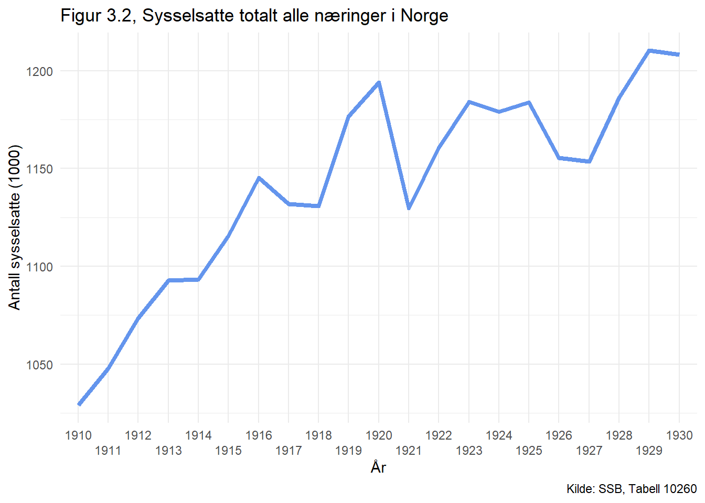

df_gini %>%filter(year >=1875) %>%filter(var %in% df_gini_navn[4]) %>%ggplot(aes(x=year,y=verdi)) +geom_line() +geom_smooth() +ylim(0.25,0.75) +theme_bw() +labs(title ="Figur 1.1, Gini-koeffisienter for inntektsfordelingen i Norge",subtitle ="1875–2017. Gjennomsnitt av øvre og nedre grense.",y="Gini-koeffisient",x="År",caption ="Kilde: Modalsli, Aaberge og Atkinson (2021)")
I figuren over ser vi nærmere på ulikheten mellom rike og fattige i Norge i perioden mellom 1875 til 2020 for å få ett helhets intrykk av utviklingen over tid. i y-aksen ser vi ginitallet mot år på x-aksen. Gini tallet i denne målingen er en S80S20 utregning for å kunne se på ulikheten mellom rike og fattige.
Det er lagt inn faste datapunkt og det er trekt en linje mellom alle datapunkt for å lettere illustrere gjennomsnittet for perioden.
Som vi ser var ulikheten størst rundt 1918. Videre ser vi at ulikheten endrer seg både opp og ned, men at det blir stadig mindre ulikhet fra mot 1980. Før det snur igjen å blir mere ulikhet fram mot 2020.
Code
df_bnp %>%filter(year >=1875) %>%filter(year <=1930) %>%mutate(BNP =log(BNP)) %>%ggplot(aes(x=year,y=BNP)) +geom_line() +geom_smooth() +theme_bw() +labs(title ="Figur 1.2, BNP per person",subtitle ="Log faste-2005 kroner. 1875-2017.",y="BNP per person",x="År",caption ="Kilde: Norges Bank")
I denne figuren ser vi på bruttonasjonalprodukt fordelt per person i Norge i årene mellom 1875 og 1930. I y-aksen ser vi kroneverdien per person målt i Log faste 2005 kroner over år på x-aksen.
I denne perioden ser vi tydelig at hver enkeltperson i Norge får mere penger å disponere etter som tiden går. Det er en del ubalanse i perioden 1916 til 1924, men det forstsetter å stige i helhet.
Code
df_bnp %>%filter(year >=1910) %>%filter(year <=1930) %>%ggplot(aes(x=year,y=DLBNP)) +geom_line() +geom_smooth() +theme_bw() +labs(title ="Figur 1.3, BNP per person",subtitle ="Årlig endring. Log faste-2005 kroner. 1875-2017",y="BNP per person",x="År",caption ="Kilde: Norges Bank")
For å se nærmere på den ubalansen i perioden 1910 til 1930 ser vi i denne figuren de årlige endringene i BNP per person. Denne figuren vises også i Log faste 2005 kroner. Vi ser tydelig at det er store endringer for hvert år både opp og ned.
Spørsmål: Beskriv hvordan ulikheten og veksten i inntekter utviklet seg i 1920-årene sammenlignet med øvrige perioder.
Etter å ha betraktet figurene over får vi ett intrykk av at tiden rundt 1920 tallet var preget av en økonomi i ubalanse sammenliknet med tiden videre. Selv om økonomien var svingende har Norge fortsatt klart å ha positiv vekst i sin økonomi. Det kan være flere årsaker til dette men vi kan anta at de mest betydningsfulle årsakene til dette er på grunn av første verdenskrig og politikken som ble ført i denne perioden.
Code
# ny tabell hvor vi skal beregne inntekterdf <- df_andeler # lagrer en liste med årene hvor vi har observasjoner med inntektsandeleryears_list <- df$year %>%unique()# wide-format er enkleredf <- df %>%pivot_wider(names_from = var, values_from = verdi) # ny tabell med bnp-tall for årene hvor vi har observasjonerdf_temp <- df_bnp %>%filter(year %in% years_list)# anstendige navndf <- df %>%rename("0-10"="share_0_10","10-20"="share_10_20","20-30"="share_20_30","30-40"="share_30_40","40-50"="share_40_50","50-60"="share_50_60","60-70"="share_60_70","70-80"="share_70_80","80-90"="share_80_90","90-100"="share_90_100","90-99"="share_90_99","99-100"="share_99_100")# lagrer navndf_navn <- df %>%names()df <- df %>%mutate(`0-10`=10*`0-10`*df_temp$BNP,`10-20`= (100/10)*`10-20`*df_temp$BNP,`20-30`= (100/10)*`20-30`*df_temp$BNP,`30-40`= (100/10)*`30-40`*df_temp$BNP,`40-50`= (100/10)*`40-50`*df_temp$BNP,`50-60`= (100/10)*`50-60`*df_temp$BNP,`60-70`= (100/10)*`60-70`*df_temp$BNP,`70-80`= (100/10)*`70-80`*df_temp$BNP,`80-90`= (100/10)*`80-90`*df_temp$BNP,`90-100`= (100/10)*`90-100`*df_temp$BNP,`90-99`= (100/9)*`90-99`*df_temp$BNP,`99-100`= (100/1)*`99-100`*df_temp$BNP,)df <- df %>%pivot_longer(!year,names_to ="var", values_to ="verdi")andeler <- df$var %>%unique()
Code
df %>%filter(year >=1920) %>%filter(year <=1930) %>%# Endrer slik at man kan se nærmere på 1920.filter(var %in% andeler[1:10]) %>%mutate(verdi=verdi/(10^5)) %>%ggplot(aes(x=year,y=verdi,color=var)) +geom_line(linewidth=1) +labs(title ="Figur 2.1, BNP per person",subtitle ="Hundretusener faste 2005-kroner. Fordelt på inntektsdesiler. 1900-1950", # Ser ikke så langt som 1950.y ="BNP per person",x ="År",color ="Desil",caption ="Kilder: Modalsli, Aaberge og Atkinson (2021), Norges Bank") +theme_minimal()
Figuren viser BNP i hundretusener fordelt på inntektsdesiler. Den viser endringen på den øverste desilen med en nedgang de første årene, men overalt en økning i mellomkrigstiden. Desil 80-90 har en liten økning fra 75.000 til 100.000 kroner. Desil 70-80 har en liten vekst til 1925 men en nedgang til 1930, og desil 60-70 virker til å ha den største nedgangen i BNP.
Totalt sett så ser det ut som at selv om Norge var i en hard økonomisk periode i mellomkrigstiden, så har ikke BNP per person, for arbeiderklassen eller de rikeste hatt noen drastisk nedgang med unntak av desil 60-70. Det virker mer som at selv om kriseårene var veldig reelle så var det på andre områder den økonomiske politikken rammet landet mest.
Code
df %>%filter(year %in%c(1920:1930)) %>%# Endrer slik at man kan se på 1920 nærmeremutate(verdi=log(verdi)) %>%filter(var %in% andeler[1:10]) %>%ggplot(aes(x=year,y=verdi,color=var)) +geom_line(linewidth=1.25) +labs(title ="Figur 2.2, Log BNP per person", subtitle ="Faste 2005-kroner. Fordelt på inntektsdesiler. 1900 - 1930",y ="Log BNP per person",x ="År",color ="Desil",caption ="Kilder: Modalsli, Aaberge og Atkinson (2021), Norges Bank") +theme_bw()
Figuren viser andel av BNP som hvert desil i gruppene får av total BNP fremstilt logaritmisk med faste 2005-priser. Så alle personene i desil 90-100 eier totalt litt under 12 prosent av den totale BNP til Norge. Når paripolitikken ser ut til å ende i 1928, kan man se på figuren at det virker veldig innvirkende at økonomien stabiliserer seg igjen. Ettersom at alle desilene flater mer ut og blir mer harmoniske.
Oppgave 3, Norge i mellomkrigstiden
Under første verdenskrig ble gullstandarden opphørt, og det ble økonomisk usikkerhet i Norge fordi verdien til kronen nå ikke var pari gull lengre. Denne perioden refereres ofte til som de harde 1920-årene, fordi norsk økonomi gikk fra en lang periode med høykonjunktur over til lavkonjunktur. Norges sentralbanksjef på denne tiden Nicolai Rygg mente at for å komme tilbake til høykonjunkturen som vi hadde før og under krigen så måtte vi prøve noe nytt for å føre kroneverdien. Dette ble kalt for paripolitikken og vi skal se på effektene den hadde på norsk økonomi.
Paripolitikken
I perioden mellom 1920 og 1930 var paripolitikk en politikk som aktivt ble ført for å få økonomien til flere nordiske land tilbake til gullstandard, det var det dominerende pengesystemet som ble brukt før første verdenskrig, men ble suspendert i krigsperioden. Så det var ett ønske om å komme seg tilbake til denne pengeenheten som hadde fungert godt tidligere. Pengeenheten skal ha et fast innhold av gull, og bankene forpliktet seg til å kunne gi ut gullbarrer for sedler.
Politikken hadde som mål å begrense mengden penger i omløp som skulle senke prisnivået og styrke valutaens verdi relativt i forhold til andre lands valuta. En av de største forkjemperne for denne politikken var Nikolai Rygg, Sentralbanksjef i Norges Bank i 1920 til 1946. Rygg argumenterte for politikken med at gjenreisning av kroneverdien var nødvendig for nasjonens internasjonale anseelse og kredittverdighet og for folkets moral.
Figur 3.1 viser inflasjonen i Norge med faste 1998 priser. Der er det tydelige svingninger gjennom hele denne perioden. Som er resultatet av pengepolitikken. Selv om det kan være mange årsaker til at en økonomi kan være i ubalanse anses paripolitikken å være en av årsakene til ustabiliteten i denne perioden. Det var det bred oppslutning for politikken i starten av 1920 årene, men den ble senere kritisert for å være årsaken til ubalansen i Norsk økonomi. Tanken om å gjenopprette en gitt verdi mot gull har bidratt til å skape mere ubalanse enn å stabilisere.
Code
# Regner ut inflasjonencpi <- cpi %>%mutate(cpi_data =lag(value, n=1L)) %>%mutate(inflation = value-cpi_data )cpi %>%# skifter navn på år til year, filtrerer på år 1920-30rename(year = år) %>%filter(year >=1920:1930) %>%# starter å plotteggplot(aes(x= year, y=inflation, group =1))+geom_line(color="cornflowerblue", size =1.5)+# Lager titlerlabs(title="Figur 3.1, Inflasjon i Norge", x="År", y="Inflasjon",caption="Kilde: Norges Bank")+theme_minimal()+# Siden theme_fivethirtyeight har fjernet titler til aksene må jeg legge de# inn igjen i themetheme(axis.title =element_text())+# Lager en linje som går gjennom y i 0geom_hline(yintercept =0)
Arbeidsledighet
Fra starten av 1900-tallet og fram til første verdenskrig var Norge et land preget av den industrielle revolusjon. Norske bedrifter tok i bruk maskineri og begynte å åpne fabrikker. Det var på denne tiden en overgang fra et Norge som i hovedsak var sysselsatt ved fiske, fangst og gårdsbruk til et land hvor det også ble normalt å se mannen i gata være en fabrikkarbeider. Arbeidsledigheten i landet var lav, og vi hadde en periode hvor sysselsettingen var i vekst. (Se figur 3.2)
Code
# Plotter sysselsatte of filtrerer ut for alle næringer, og fra år 1910-30labour %>%rename(year = år) %>%rename(business = næring) %>%filter(business =="Totalt for næringer") %>%filter(year >=1910) %>%ggplot(aes(x=year, y=value, group=1)) +geom_line(color="cornflowerblue", size=1.5) +# Gjør så årstall ikke går over hverandrescale_x_discrete(guide =guide_axis(n.dodge =2)) +labs(x ="År", y="Antall sysselsatte (1000)",title ="Figur 3.2, Sysselsatte totalt alle næringer i Norge",caption="Kilde: SSB, Tabell 10260")+theme_minimal()+# Endrer på tittel størrelsen, var litt for stor for pdf printtheme(axis.title =element_text(), plot.title =element_text(size =13))

I mellomkrigstiden derimot var høykonjunkturen over og inflasjonen fra krigen gikk over til deflasjon (se figur 3.1). I starten av 1920 ble det spådd av statsministeren at vi sto ovenfor et økonomisk sammenbrudd. Han jobbet som skipsreder og hadde sett at frakten av varer til utlandet hadde sunket med 30 prosent på bare noen få måneder. Bedriftene i Norge som hadde investert for å fortsette under høykonjunkturen måtte stenge ned i følge han (Klassekamp og fellesskap: 1920-1945, side 16)
1920-årene ble sett på som harde på grunn av to hovedperioder, 1921 og 1926-27. Slik som statsministeren spådde fikk han rett, og mange bedrifter gikk enten konkurs eller måtte nedbemanne på grunn av at varene de produserte ikke lengre var mulig å bli kvitt til lønnsomme priser. (Se figur 3.4)
Fagforeningene hadde egne prosenttall på arbeidsledigheten i foreningene og i figur 3.3 kan man se hvor kraftig arbeidsledigheten steg i mellomkrigstiden. 1921 var et ille år for arbeidsledigheten, før Norge får en ny krisetopp i 1926-27 hvor et stort antall arbeidsdager gikk tapt på grunn av arbeidskonflikter og konkurser som man kan se i figur 3.4 og 3.5.
Code
# Skifter noen navn og bruker as.numeric for å få dataen fra bokstaver til# heltalldf_bankrupt <- df_bankrupt[-(1:10),] %>%rename(year ='When.using.these.data,.please.cite:') %>%rename(value ='X2') %>%mutate(value =as.numeric(value))
Code
# Plotter figur som viser konkurser i norge, filtrerer på 1920-30.df_bankrupt %>%filter(year %in%c(1920:1930)) %>%ggplot(aes(x=year, y=value, group=1)) +geom_line(color="cornflowerblue", size=1.5) +labs(title="Figur 3.4, Konkurser i Norge", x="År", y="Antall",caption="Kilde: Norges Bank")+theme_minimal()+theme(axis.title=element_text())
Konflikter og streik
Ved begynnelsen av 1900-tallet var de fleste arbeidsavtaler mellom bedrifter og arbeidstaker inngått muntlig eller individuelt. Det var her at dagens fagforeninger og organisasjoner begynte å se dagens lys, som et ledd mellom bedriften og arbeidstaker for å forhandle avtaler om lønnsvilkår og ansettelse. Med vekst i organisasjonene ble også mulighetene for konflikter større.
Mange av bedriftene prøvde å holde produksjonen oppe selv om Norge var i en krisetilstand hvor prisene ble presset ned. Da fikk de inn penger selv om fortjenesten ble mindre. Men på lengre sikt så bedriftslederne en hovedårsak for at fortjenesten ble liten, arbeiderne hadde for høye lønninger og disse måtte ned. Dette prøvde de også å gjøre, men arbeiderne kjempet tilbake. Et stort og det eneste virkemiddelet arbeiderne hadde for å kjempe tilbake mot bedriftene var streik. Dette kan man spesielt se i 1924 (Figur 3.5), hvor arbeidsstansen var på hele 5.1 millioner tapte arbeidsdager totalt i Norge.
Code
# Klarer ikke å finne en kilde som har data for årstall tidligere enn 1922.df_conflict %>%ggplot(aes(x=year, y=lost_workdays/1000, group=1))+geom_line(color="cornflowerblue", size=1.5)+labs(x="År", y="Tapte arbeidsdager (1000)",title="Figur 3.5, Tapte arbeidsdager i konflikter",caption="Kilde: SSB")+theme_minimal()+theme(axis.title =element_text(), plot.title =element_text(size=17))
Det vi kan konkludere med er at i disse tiårene har det skjedd mye kritikkverdig i norsk økonomi. Som mange økonomer har kommet fram til tidligere er denne tiden et godt eksempel på hvordan pengepolitikken i et land ikke bør styres. Deflasjonen som paripolitikken førte til gjorde slik at Norge slet med blant annet tapte arbeidsdager, konflikter og streiker. Selv om mellomkrigstiden var en krisetid for Norge medførte den også til noen positive endringer for landet. Vi gikk fra et arbeidsgivermarked til et arbeidstakermarked, vi fikk flere fagforbund som forhandlet frem bedre arbeidsvilkår for arbeiderne og vi lærte at deflasjonspolitikk ikke skaper positive virkninger for en økonomi.